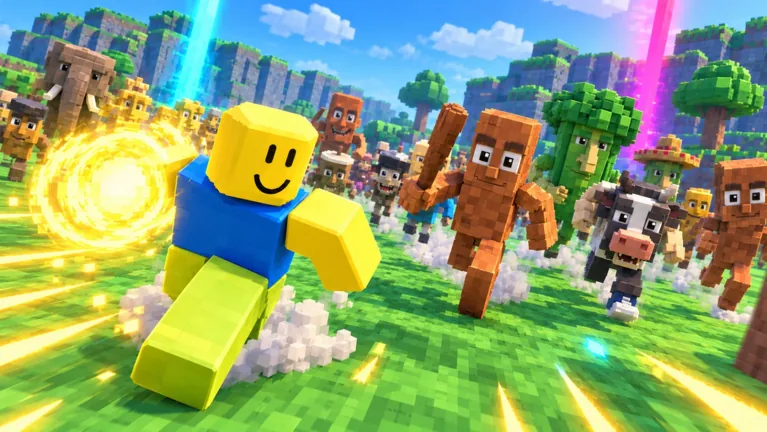

01
list2audioxd
Descarga playlists de YouTube Music como audio. GUI para Windows y CLI, perfiles de calidad y descargas incrementales.
Ver repoProyectos y experimentos
Apps y scripts que resuelven problemas míos. Si sirven para alguien más, mejor.
Python · Rust · Luau · desktop · web
Proyectos
01
Descarga playlists de YouTube Music como audio. GUI para Windows y CLI, perfiles de calidad y descargas incrementales.
Ver repo03
Survivors con personajes brainrot, directo en Roblox. Hecho en Luau.
Jugar
El resto son experimentos en local.
Sobre mí
Soy laopro. Aprendo construyendo y publico lo que sale bien.